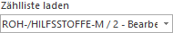
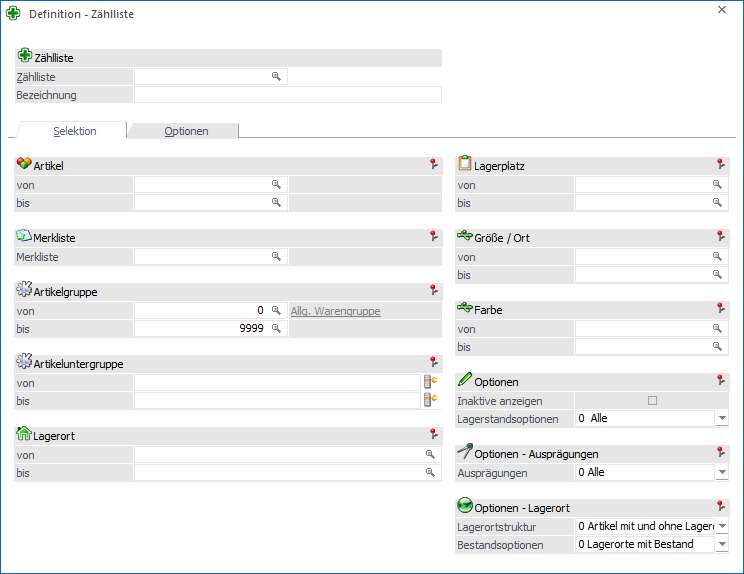
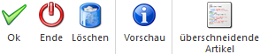
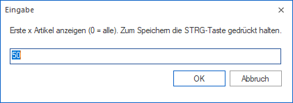

Im Menüpunkt…
1 WinLine FAKT
1 Inventur
1 Definition - Zählliste
… können Zähllisten für die Inventur erfasst werden. Diese dienen in weiterer Folge als Steuerungselement für die Selektion und den Inventurprozess.
Hinweis
Die Auswahl der Zählliste findet in der Inventur über die Auswahlliste "Zählliste laden" statt:

Die Anzahl der Einträge innerhalb der Auswahlliste kann über die Option "Anzahl Zähllisten in Auswahl" (WinLine START - Parameter - Einstellungen… - Register "Admin") definiert werden.

Das Fenster ist hierbei in die folgenden Register aufgeteilt, welche in den folgenden Kapiteln beschrieben werden:
ü Register "Selektion"
In dem
Register "Selektion" wird die grundsätzliche Artikelselektion vorgenommen.
ü Register "Optionen"
In dem Register
"Optionen" werden grundsätzliche Einstellungen für die Zählliste (z.B.
Inventurzeitraum) definiert.
Buttons

Ø Ok
Durch Drücken des Buttons "Ok" bzw. der Taste F5 wird die Zählliste gespeichert.
Ø Ende
Bei Anwahl des Buttons "Ende" bzw. der Taste ESC wird das Fenster geschlossen und alle nicht gespeicherten Eingaben verworfen.
Ø Löschen
Mit Hilfe des Buttons "Löschen" kann die aktuell ausgewählt Zählliste gelöscht werden.
Hinweis
Das Löschen von Zählliste mit dem Status "2 - Bearbeitet" ist nicht möglich.
Ø Vorschau
Durch Anwahl des Buttons "Löschen" wird am Bildschirm eine Vorschau über die Artikel und Lagerorten gemäß Zähllistenselektion ausgegeben.
Hinweis
Vor Erstellung der Vorschau wird abgefragt, wie viele Artikelzeilen in der Liste ausgegeben werden sollen.

Ø Überschneidende Artikel
Grundsätzlich können Artikel und Lagerorte auf unterschiedlichen Zähllisten erscheinen, wobei in der nachfolgenden Inventur die Inventurmenge immer nur über eine Zählliste erfasst werden kann. Durch Anwahl des Buttons "Überschneidende Artikel" wird eine Liste am Bildschirm ausgegeben, welche auf solche Konstellationen hinweist.